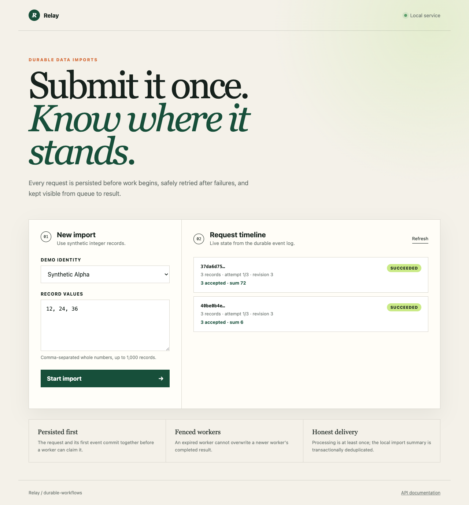

Durable imports. Recoverable work.
Submit a synthetic import, inspect durable progress, and recover safely after retries or worker interruption.
Static evidence walkthrough. This is a published record of local measured runs, not a live backend. The complete runnable service is in the repository.
What was verified
- Owner authorization, typed inputs and same-key replay/collision handling
- Concurrent claiming, fenced stale completions and one local result per job
- Worker recovery after lock expiry, bounded retries and process termination
- Linux ARM64 container HTTP submission -> succeeded with expected sum42

Run the project
git clone https://github.com/RoshanDewmina/durable-workflows cd durable-workflows uv sync --frozen make test make serve
Limits that matter
- Single-host SQLite; at-least-once worker execution. External side effects need their own idempotency.
- Public page is evidence only. Persistent live hosting with owned resettable storage is not provisioned.
- Local throughput excludes remote dependencies and is not production capacity.
Independent review: Independent Astra review and bounded re-review; root verified accepted corrections. Source at page generation: db14b5187cbc99963332e5c4fadb54c7400faa22. Software verification does not prove personal mastery; interview understanding and resume wording remain pending user review.
External spending for this portfolio remains$0. Local hardware/electricity cost unmeasured. Synthetic workloads do not establish production capacity.